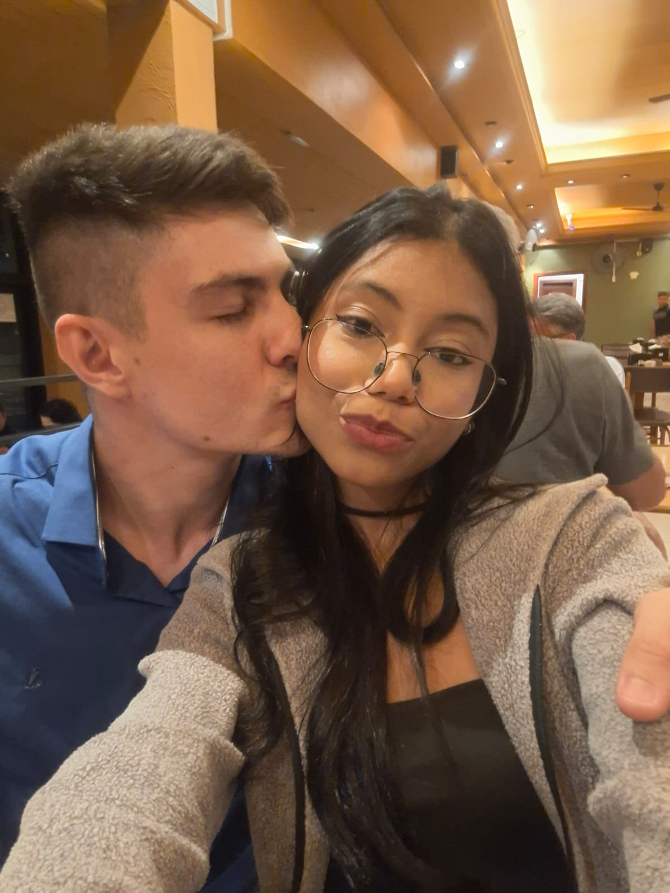
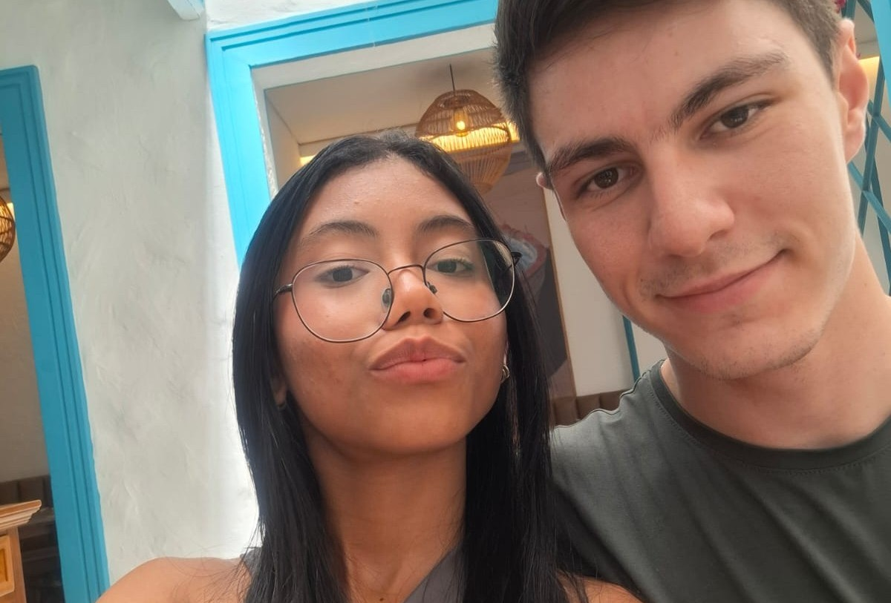
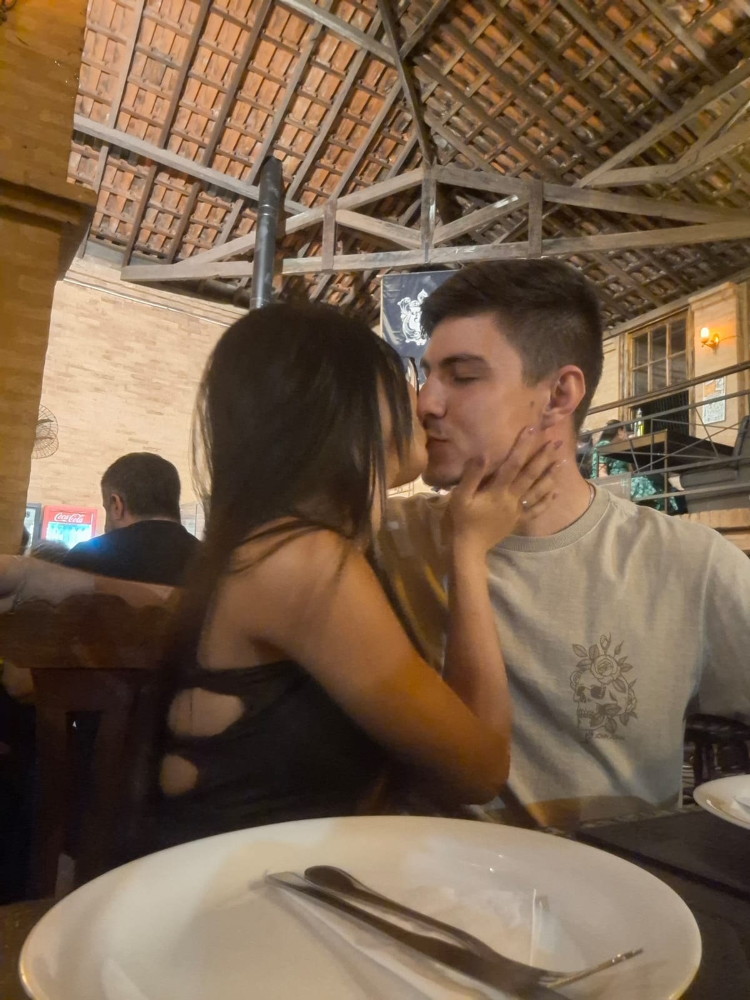

ps: Até porque você jamais seria uma.
07/03/2026Porque eu quero que você saiba que não há um dia em que eu não pense em você. Não houve um momento desde que nos conhecemos que eu não queira acordar do seu lado, te abraçar, beija-lo, lhe acolher. Sou terrivelmente péssima em programação e isso tudo deve ter ficado tão torto, mas eu tentei. Eu pesquisei, procurei, estudei e estou aqui programando isso e melhor, escrevendo a você - e isso sim eu sei fazer. Eu definitivamente nunca amei tanto alguém assim e creio que jamais amarei mesmo. Obrigada pela paciência que você tem comigo, pelo carinho, pelas risadas que você me tira até quando eu só falto estourar tudo com um bico de 30km. Eu nunca imaginei que a frase: "encontre a outra metade da sua laranja" a sério, mas agora eu sinto que você era a metade que me faltava. Pode até não ser uma laranja, mas é meu. E só por ser meu, é melhor do que qualquer outra coisa; até mesmo uma fruta. Eu sou tão sua e espero que ssaiba disso.

Eu vejo. Eu vejo quando você está cansado, eu vejo seus defeitos, seus problemas, suas inseguranças, seu desânimo de vez em quando, suas dificuldades, qualidades; e ainda sim escolho ficar. Porque não há amor maior do quê aquele que se dispõe a não ir embora.
Vamos ter uma casa linda, momentos incríveis. Quero muito, tremendamente, totalmente, olhar para os olhos do meu filho e enxergar você neles. Quero envelhecer ao seu lado, quero que a gente se cuide, se ame, se respeite. Quero que a gente se faça feliz, que a gente se complete e que insista. Porque eu sei que podemos, porque vejo potencial. Eu sei que podemos ser felizes, porque já sou feliz com você e quero que também se sinta feliz comigo. Eu te amei ontem, muito. Estou te amando mais ainda hoje e tenho certeza que vou te amar ainda mais amanhã. Eu te amo, eu te amo, eu te amo.

Eu te amo. Eu te amo. Eu te amo. Eu te amo. Eu te amo. Eu te amo. Eu te amo. Eu te amo. Eu te amo. Eu te amo. Eu te amo. Eu te amo. Eu te amo. Eu te amo. Eu te amo. Eu te amo. Eu te amo. Eu te amo. Eu te amo. Eu te amo. Eu te amo. Eu te amo. Eu te amo. Eu te amo. Eu te amo. Eu te amo. Eu te amo. Eu te amo. Eu te amo. Eu te amo. Eu te amo. Eu te amo. Eu te amo. Eu te amo. Eu te amo. Eu te amo. Eu te amo. Eu te amo. Eu te amo. Eu te amo. Eu te amo. Eu te amo. Eu te amo. Eu te amo. Eu te amo. Eu te amo. Eu te amo. Eu te amo. Eu te amo. Eu te amo. Eu te amo. Eu te amo. Eu te amo. Eu te amo. Eu te amo. Eu te amo. Eu te amo. Eu te amo. Eu te amo. Eu te amo. Eu te amo. Eu te amo. Eu te amo. Eu te amo. Eu te amo. Eu te amo. Eu te amo. Eu te amo. Eu te amo. Eu te amo. Eu te amo. Eu te amo. Eu te amo. Eu te amo. Eu te amo. Eu te amo. Eu te amo. Eu te amo. Eu te amo. Eu te amo. Eu te amo. Eu te amo. Eu te amo. Eu te amo. Eu te amo. Eu te amo. Eu te amo. Eu te amo. Eu te amo. Eu te amo. Eu te amo. Eu te amo. Eu te amo. Eu te amo. Eu te amo. Eu te amo. Eu te amo. Eu te amo. Eu te amo. Eu te amo. Eu te amo. Eu te amo. Eu te amo. Eu te amo. Eu te amo. Eu te amo. Eu te amo. Eu te amo. Eu te amo. Eu te amo. Eu te amo. Eu te amo. Eu te amo. Eu te amo. Eu te amo. Eu te amo. Eu te amo. Eu te amo. Eu te amo. Eu te amo.

Obrigada por cuidar de mim, por não ter me deixado ir embora, por ter ficado, me cuidado todos os dias e por principalmente me amar como só você ama. Eu não quero que vá embora e por isso sou capaz de dar tudo o que eu tenho, tudo o que eu posso, pra te fazer ficar. Por te fazer feliz. Por te fazer meu. Só meu.